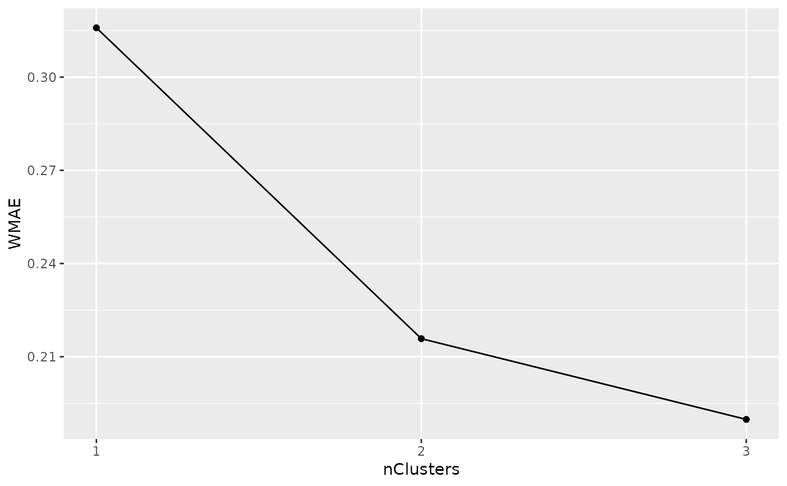
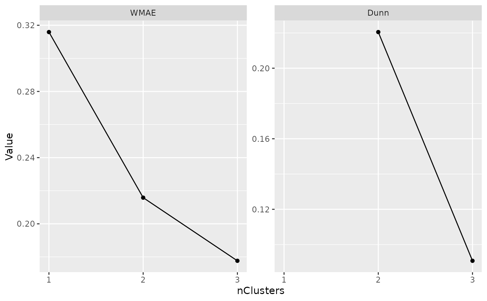

Plot one or more internal metrics for all lcModels
plotMetric(models, name, by = "nClusters", subset, group = character())A lcModels or list of lcModel objects to compute and plot the metrics of.
The name(s) of the metric(s) to compute. If no names are given, the names specified in the latrend.metric option (WRSS, APPA, AIC, BIC) are used.
The argument name along which methods are plotted.
Logical expression based on the lcModel method arguments, indicating
which lcModel objects to keep.
The argument names to use for determining groups of different models. By default,
all arguments are included.
Specifying group = character() disables grouping.
Specifying a single argument for grouping uses that specific column as the grouping column.
In all other cases, groupings are represented by a number.
ggplot2 object.
Print an argument summary for each of the models.
Convert to a data.frame of method arguments.
Subset the list.
Compute an internal metric or external metric.
Obtain the best model according to minimizing or maximizing a metric.
Obtain the summed estimation time.
Plot a metric across a variable.
Other lcModels functions:
as.lcModels(),
lcModels,
lcModels-class,
max.lcModels(),
min.lcModels(),
print.lcModels(),
subset.lcModels()
data(latrendData)
method <- lcMethodLMKM(Y ~ Time, id = "Id", time = "Time")
methods <- lcMethods(method, nClusters = 1:3)
models <- latrendBatch(methods, latrendData)
if (require("ggplot2")) {
plotMetric(models, "WMAE")
}

if (require("ggplot2") && require("clusterCrit")) {
plotMetric(models, c("WMAE", "Dunn"))
}
#> Warning: Removed 1 row containing missing values or values outside the scale range
#> (`geom_point()`).
